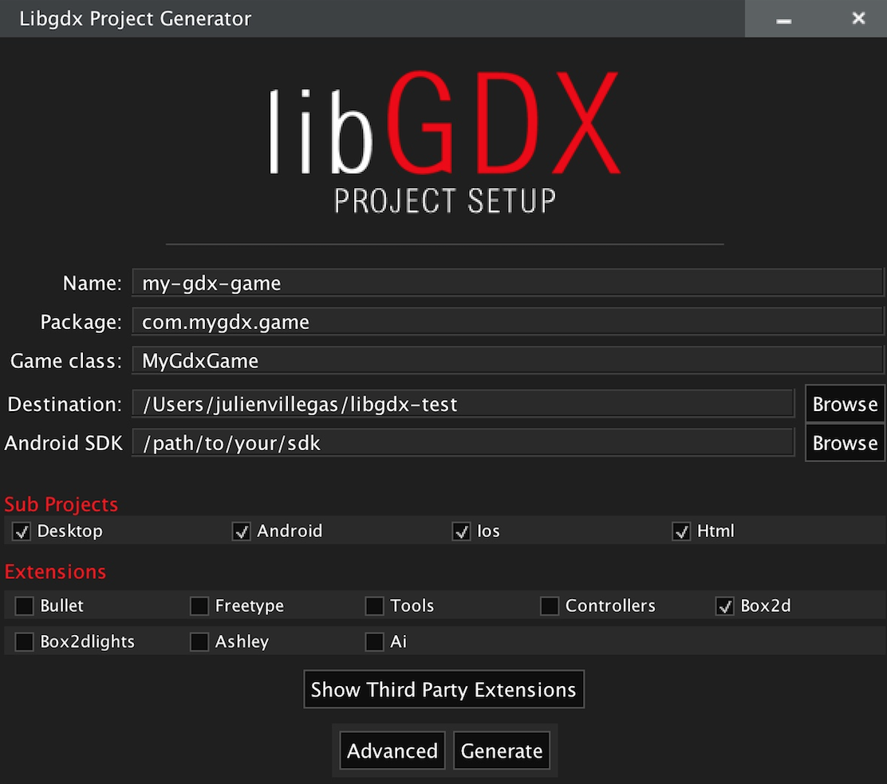

Game Development Using Java
For me game development is more of a journey than a skill - there doesn’t appear to be a clearly defined boundary at which point you have made it as a games programmer. As I will explain in a future blog on HTML games, it takes about a day to learn how to code pong from scratch (or 20 minutes if you have experience).
On the other end of the spectrum, it takes hundreds of developers, with qualifications, years of experience and millions to produce a mainstream game such as Grand Theft Auto. There is an ocean of knowledge to be learned and game development has a rich history and diverse heritage.All the above considered, on the scale I rate myself as just beyond the point of dipping my toes in the water. In this instalment, I will cover some of the learnings I have encountered coding games in Java using the ASDK - Android Software Development Kit.
My progress with creating Super Mario for a mobile device can be found here: Adam's GitHub. Also a video of this can be found here at Super Mario. Finally I also managed to fully complete flappy birds - but have more I wish to add in the future.
LIBGDX
Whilst Java has many libraries, which includes useful functions, for gaming it can get quite tedious constantly defining things like x,y,z position, velocities, vectors. delta time and so on. LIBGDX saves a lot of the low level design and encapsulates a lot of functions that can be used on the android platform. It is highly recommended to use this lib or a similar one.
The link for LIBGDX can be found here at BadLogic.

p { color: red; }
body { background-color: #eee; }
< >
p { color: red; }
body { background-color: #eee; }
< >
Adam McMurchie 10/April/2017